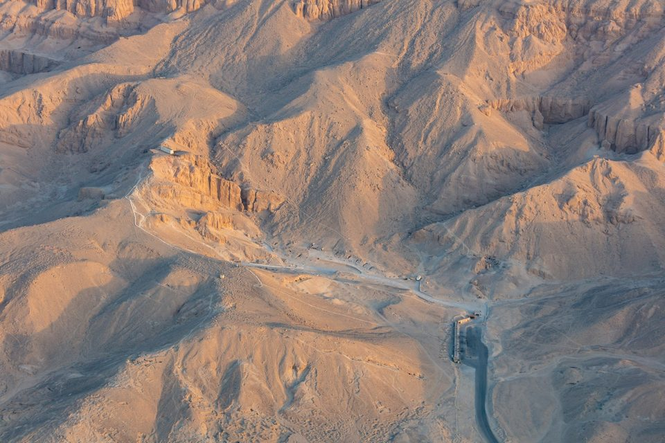

Egypt · Luxor
Valley of the Queens audio guide
5 stops · 10 min
Billed in ZAR
Unlocks in this browser after payment.
Where Egypt buried its royal wives and children. Listen here, or get the Earwise app to play as you walk.
Stops
- 1
Ta Set Neferu, the Place of Beauty
On the main path through the valley, in the open wadi below the pale cliffs, close to the line of tomb shelters. This is stop 1 on the route.
Play0:00 / –:––Read along
You are standing in a dry desert valley on the west bank of Thebes, facing modern Luxor over the Nile. Its ancient name was Ta Set Neferu. It is usually translated as the Place of Beauty. The name is sometimes linked with royal children instead.
Either reading suits the dead who lie here. At first the valley served court officials. Later it held royal wives, along with princes and princesses.
Burials here span some four or five centuries. Dates run from about 1550 to 1080 BC, though some shift them by a few decades. The main valley alone holds ninety-one tombs. Side valleys hold more.
This is no lesser copy of the Valley of the Kings, just over the hills. It served a different royal circle. Its tombs are smaller and more intimate, and the story they tell is about family.
The most famous tomb here is Nefertari's. She was a queen of Ramesses the Second. Her paintings rank among the finest to survive from ancient Egypt. From 1986 to 1992, Egyptian and international conservators worked on them together.
That tomb was closed to visitors in March 2024, so that humidity inside could be monitored. Reports in late 2026 described it as closed, with no reopening date announced. For that reason, it is not one of the stops on this tour.
Look along the slopes at the boarded and roofed entrances. Over the centuries, flash floods and falling rock have destroyed much of the painted plaster in these tombs.
The valley is one part of the World Heritage listing for ancient Thebes.
Modern digging here began in 1903, with an Italian mission. Its leader was Ernesto Schiaparelli, who ran the Egyptian Museum in Turin.
- 2
QV55, the Tomb of Prince Amenherkhepshef
At the head of the long entrance ramp of QV55, one of the sloping tomb entrances on the west side of the wadi. This is stop 2 on the route.
Script and audio included when you buy - 3
QV44, the Tomb of Prince Khaemwaset
At the entrance stairway to QV44, at the southern end of the wadi, below the path. This is stop 3 on the route.
Script and audio included when you buy - 4
QV52, the Tomb of Queen Tyti
At the entrance ramp to QV52, on the cliff face above the main path. This is stop 4 on the route.
Script and audio included when you buy - 5
After the Pharaohs: Floods, Hermits and Conservation
On the valley path, in the centre of the wadi, among the tomb entrances. This is stop 5 on the route.
Script and audio included when you buy
On the map
All 5 stop pins for this guide are marked. Open map